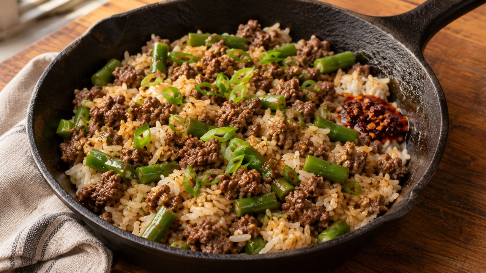

Asian-inspired · Dinner · Serves 3 · About 30 minutes
Ginger-Soy Beef and Rice Skillet

Ingredient amounts are estimates when scaled. AnyList imports the original quantities.
Ingredients
- 1 lb ground beef
- 2 garlic cloves, minced
- 1/2 tsp ground ginger
- 1 cup jasmine rice, rinsed and drained
- 1 1/4 cups water
- 2 Tbsp soy sauce
- 1 Tbsp brown sugar
- 1 cup frozen cut green beans
- 1 tsp toasted sesame oil
- Chili crisp, optional for serving
Instructions
- Brown the beef in a lidded skillet over medium-high heat, breaking it up as it cooks. Cook the beef to 160°F and drain excess fat if needed. Stir in the garlic and ginger for 30 seconds.
- Stir in the jasmine rice, water, soy sauce, and brown sugar. Bring to a simmer, cover, and reduce the heat to low. Cook for 12 minutes.
- Scatter the frozen green beans over the rice. Cover and cook another 5–8 minutes, until the rice is tender and the beans are hot. If the skillet dries out before the rice is tender, add a splash of water and cover again.
- Turn off the heat, drizzle with toasted sesame oil, and fluff the rice. Pass chili crisp at the table.